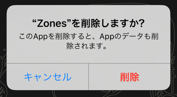
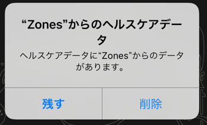

Zonesで記録したワークアウト情報は、Appleヘルスケアに保存しています。
それ以外の外部サーバーなどには一切保存していません。アプリを削除することで、すべての情報が削除できます。
アプリを削除しても、ワークアウト記録は残ります。
Zonesのワークアウト記録を全て削除したい場合は、以下の手順で削除ができます。
削除されたデータは復元できませんので、ご注意ください。
アプリを削除するときに表示されるダイアログで、ワークアウトデータを残すかどうかの選択ができます。
ZonesのiPhoneアプリを削除すると、以下のダイアログが表示されます

「削除」を選択すると、続けて以下のダイアログが表示されます。

Zonesで記録したワークアウト情報を残したい場合には「残す」を選択してください。
ここで「削除」を選択すると、Zonesで記録したすべての情報が削除されます。
削除すると復元はできません。
ご注意をお願い致します。
(iCloudやiTunesのバックアップから、"ヘルスケアデータのみ復元" ということはできません。)
iPhoneのバックアップを利用してデータを移行してください。
バックアップの方法は、Apple ヘルスケア情報をバックアップするを参照してください。
iTunesでバックアップを行う場合「バックアップを暗号化する」にチェックを必ず入れてください。
PROを購入済みの場合、新しい端末で、購入の復元をしてください。
詳しくは、PROの購入を復元するをご覧ください。